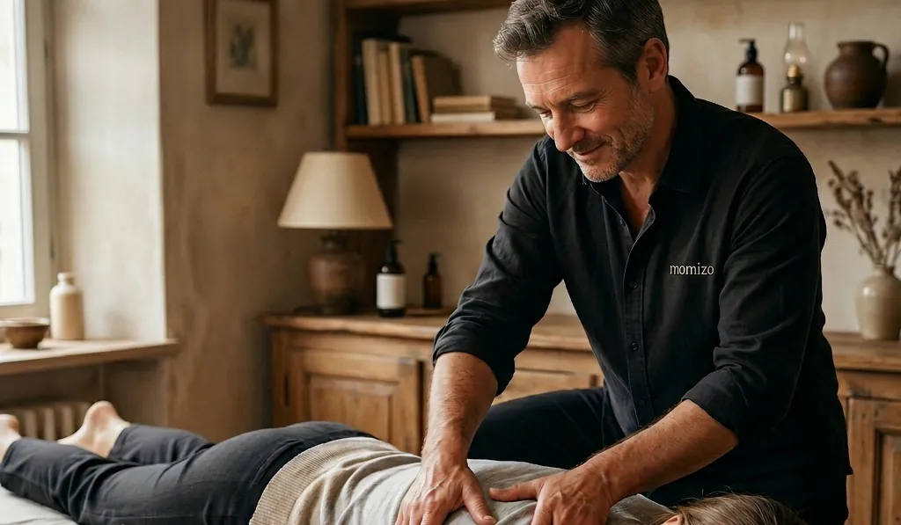
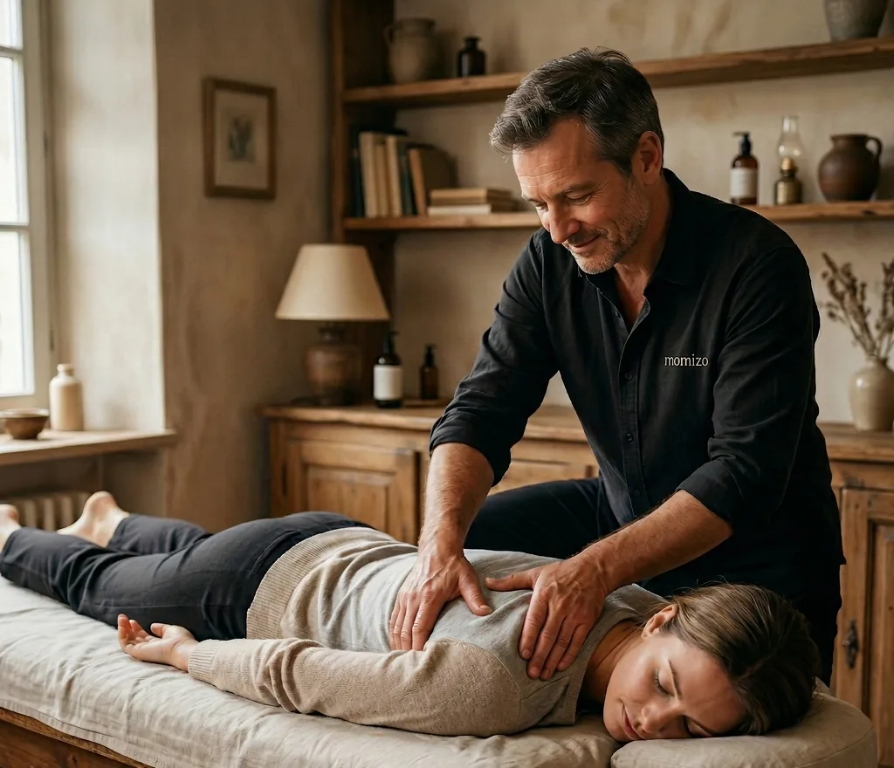

ボディコースもみほぐし
首や肩、腰や脚など、気になるところを中心に丁寧にもみほぐすコースです。力加減は、お好みに合わせて調整します。ほぐす範囲は、60分で半身、90分からは全身が目安です。
税込
- 30分¥2,000
- 60分¥3,900
- 90分¥5,800
- 120分¥7,700

選べるコース、続けやすい価格。
もみほぐし、ドライヘッドスパ、足つぼ・リフレクソロジーの3つの施術を、単独や組み合わせでご用意しています。気になる部分だけをピンポイントでケアしたい方から、全身をじっくり癒やしたい方まで、ご希望に合わせてお選びください。時間は30分から120分までで、選べる時間はコースによって異なります。

首や肩、腰や脚など、気になるところを中心に丁寧にもみほぐすコースです。力加減は、お好みに合わせて調整します。ほぐす範囲は、60分で半身、90分からは全身が目安です。
税込
オイルを使わずに、頭から首、胸元をほぐすコースです。お好みで、お顔もほぐします。頭まわりをじっくりケアしたい方や、ゆっくりリラックスしたい方におすすめです。60分からは、もみほぐしも組み合わせます。
税込
足裏を中心に、オイルを使ってほぐすコースです。立ち仕事や歩くことが多い方、足の疲れやだるさが気になる方におすすめです。60分からは、もみほぐしも組み合わせます。
税込
足つぼ・リフレクソロジー、ドライヘッドスパ、もみほぐしの3つを組み合わせたコースです。90分から、頭から足まで全身をじっくりケアします。ゆったりとした時間をお過ごしください。
税込
担当者を直接ご指名いただくか、性別でご指定いただけます。
スタッフ紹介を見る税込